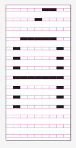

In mid September 02013, a small team of talented programmers, designers and thinkers all got together to recreate the experience of browsing the web on the first popular web browser. We’ve written previously about the Line Mode Browser Dev Days.
As part of that process, Mark Boulton and myself teamed-up to attempt to recreate the original font used on the terminal screen. This would give the look and feel of the simulator even more of that green glowing cathode-ray tube warmth.
The process turned out to be a bit harder than expected. Our first problem was to try and find out if this was an already existing font. Sites like what the font couldn’t determine it, nor could a few internet searches for the model number. We then proceeded to try and find the font file on the file system. That would jump start our attempt to re-create it.
You have to remember this computer was pushing 20 years old and while the operating system was nearly identical to today, the hardware and performance were very different. This was a command line world, so true-type fonts (and to some extent PostScript) weren’t around. After digging and digging, we came to the conclusion that the font rendered on screen wasn’t going to be a font-file, it was probably C code in the drivers for the screen. This was disheartening since there was no easy template to build from or convert.
This left us with the next best thing, taking screen shots and trying to reproduce them using modern software. The problem is, this is a terminal screen, the print screen button literally tried to do that, print the screen to a printer, not to the clipboard. So we took out our cameras and literally photographed the screen to get the characters.
The strangest part about the operating system and keyboard was that it had several uppercase accented letters for French input, but there was no way to type lower-case accented letters. We assumed they were in the system somewhere, but couldn’t manage to reproduce them onscreen for us to photograph.
This meant we needed to write a quick shell script to loop from 0 to 255 and try to output to screen the ASCII representation of each number. This worked too well. We got all the missing lower-case characters, but also lots of control characters like End Of File (EOF). The computer locked-up and we needed to hard-reset it – which was a scary concept todo to a 20+ year old machine. Luckily for us, everything came back online just fine.
Now that we had our templates for every character, we could start to convert them into a modern day font. A few internet searched confirmed that the characters were 9 pixels wide and 14 tall. The 14 pixels included ascenders and decenders. We correctly found the baseline and x-height. From there we could build-up all the other glyphs. The easiest way to do this was to create a template file in Illustrator with 9 x 14 squares. We colored some in black, others we left empty. One file per glyph. Mark and I split the load and each created half the alphabet.
Now that we had one file for each character we were missing, we uploaded the files into an online font creation service. Icomoon.io is a quick and easy way to convert SVG files of glyphs into a single font file. We did this and had our first test font. It looked great, but not like the original font did onscreen. This was because of the refresh rate on the old terminal actually made the pixels look like they had gaps vertically between them. We went back through our glyph files and converted the square pixels into some rectangles with gaps between them. We had to test this a few times to make sure we had a similar look and feel.
After we were happy, we put all our glyphs through the online font creating service again and made a new font file. This worked great, except now we didn’t have a space charter. This was causing problems because our new terminal font was mono-spaced. All the characters were the same width, except the space character. We needed to go back and add a space. It was quicker and easier to open the new TTF font file in a local program called Font Forge and add the space character. While in there we fixed some of the metadata and saved the file in various other output formats.

We’ve put the font-file, the template and all the pieces up to share for anyone to use. If the font can work for you, please feel free to use it any projects. Take the files and modify them.
You can download the files from Github: https://github.com/optional-is/Meyrin